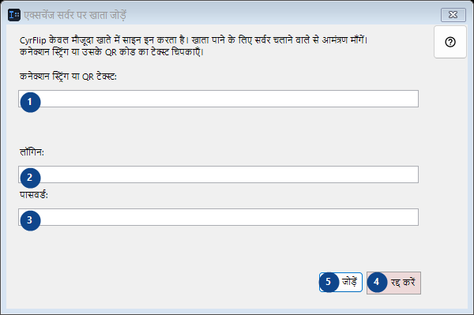
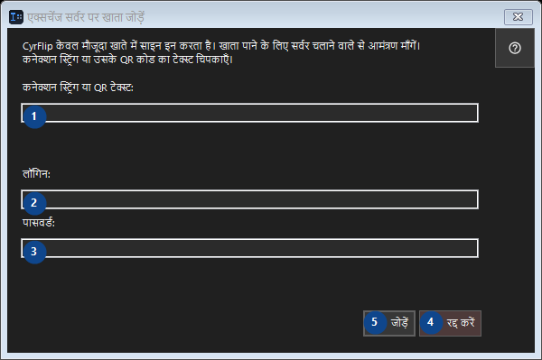

एक्सचेंज सर्वर पर खाता जोड़ें
इसका उपयोग
जो कुछ आपने कॉपी किया है, उसे अपने एक्सचेंज सर्वर के ज़रिए अपने दूसरे डिवाइस तक पहुँचाएँ।


उपयोग का क्रम
क्रमांकित विवरण पढ़ें, आवश्यक मान चुनें और विंडो के आदेश से आगे बढ़ें।
तत्व
1. CyrFlip केवल मौजूदा खाते में साइन इन करता है। खाता पाने के लिए सर्वर चलाने वाले से आमंत्रण माँगें। कनेक्शन स्ट्रिंग या उसके QR कोड का टेक्स्ट चिपकाएँ।
पास के लेबल के अनुसार मान चुनें या दर्ज करें। आगे बढ़ने से पहले जाँचें।
आपके शॉर्टकट2. CyrFlip केवल मौजूदा खाते में साइन इन करता है। खाता पाने के लिए सर्वर चलाने वाले से आमंत्रण माँगें। कनेक्शन स्ट्रिंग या उसके QR कोड का टेक्स्ट चिपकाएँ।
पास के लेबल के अनुसार मान चुनें या दर्ज करें। आगे बढ़ने से पहले जाँचें।
आपके शॉर्टकट3. CyrFlip केवल मौजूदा खाते में साइन इन करता है। खाता पाने के लिए सर्वर चलाने वाले से आमंत्रण माँगें। कनेक्शन स्ट्रिंग या उसके QR कोड का टेक्स्ट चिपकाएँ।
पास के लेबल के अनुसार मान चुनें या दर्ज करें। आगे बढ़ने से पहले जाँचें।
आपके शॉर्टकट4. रद्द करें
बताई गई कार्रवाई के लिए इस आदेश का उपयोग करें। स्वीकार करने से पहले पुष्टि पढ़ें।
आपके शॉर्टकट5. जोड़ें
बताई गई कार्रवाई के लिए इस आदेश का उपयोग करें। स्वीकार करने से पहले पुष्टि पढ़ें।
आपके शॉर्टकट